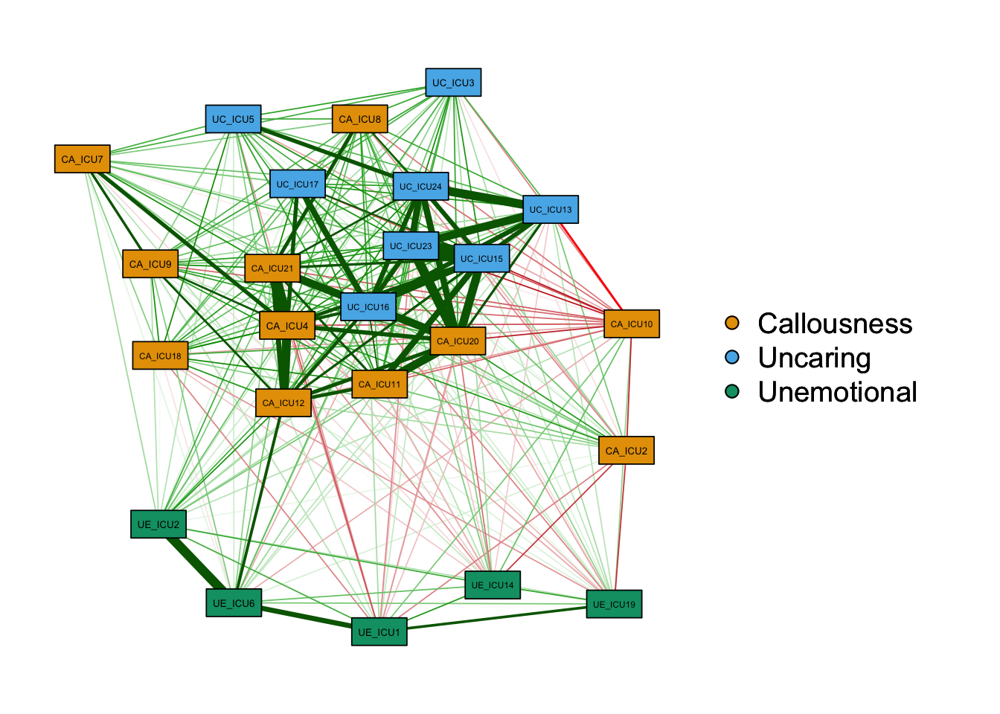
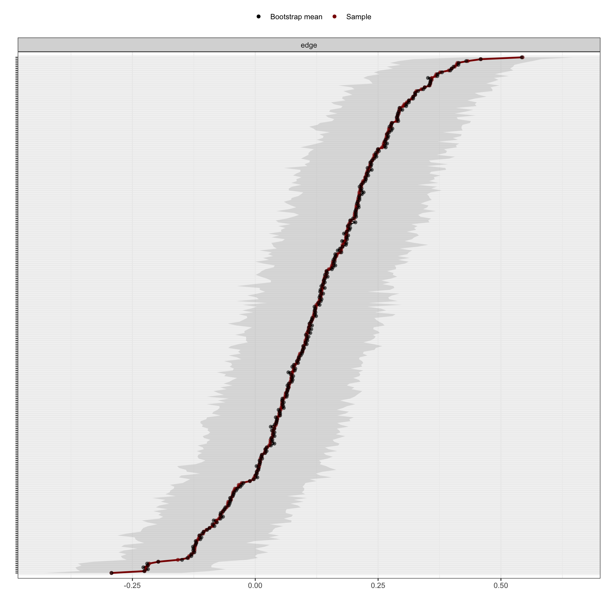
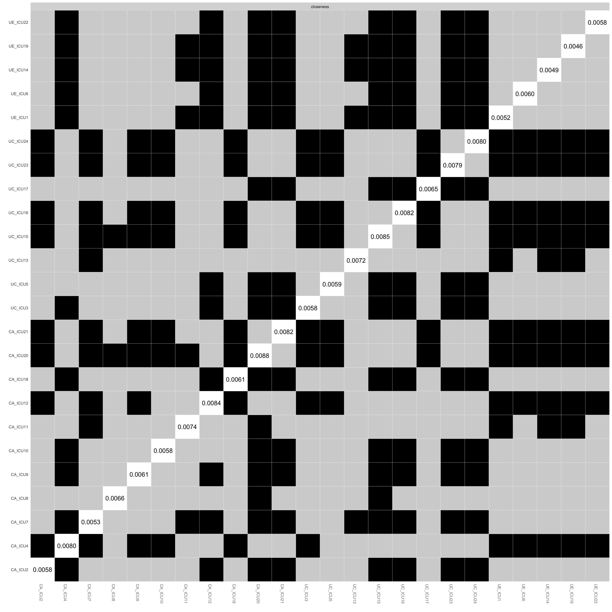
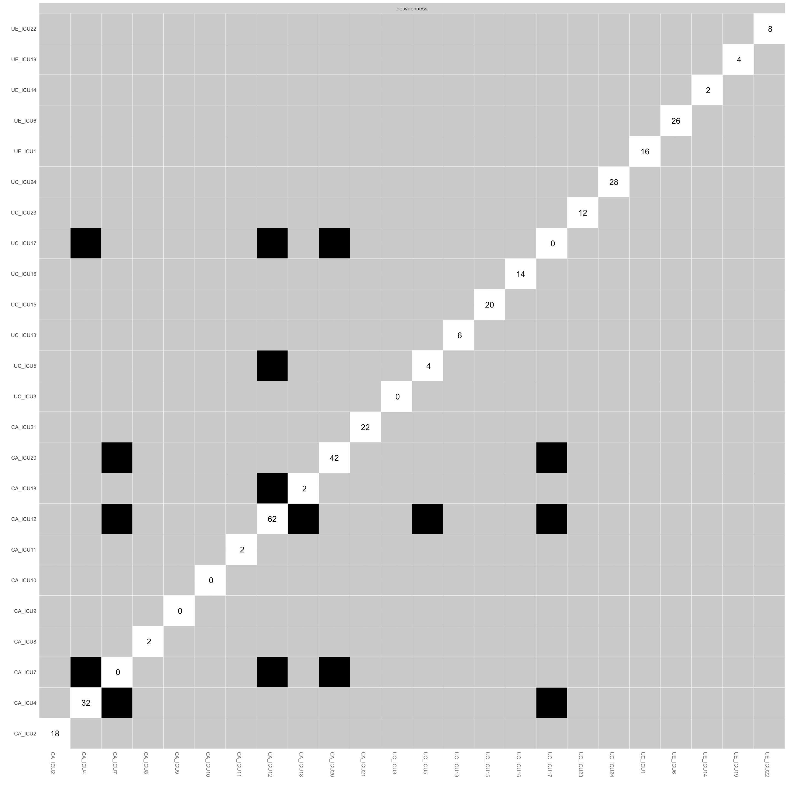

Network Analysis Workshop
Jiaxin Deng
2022/06/19
———- 目录 ——————————————————————————————–
———- 1. 实例分析与技术实现：R语言 ————————————————————–
———- 2. R语言基本操作——————————————————————————
———- 3.
实例操作1：Deng等人(2021)冷酷无情特质网络分析研究——————————–
———-实际操作练习1：使用example1演示数据进行练习——————————–
———- 4.
实例操作2：Wang等人(2022)儿童精神病态纵向网络分析研究————————–
———-实际操作练习2：使用example2演示数据进行练习——————————–
———- 5. 总结——————————————————————————————
———- 6. 学习资源分享——————————————————————————–
##1. 实例分析与技术实现：R语言 网络分析在心理学领域的应用中，常用R语言作为主要的数据分析软件。
常用的网络分析R包： qgraph (Epskamp et al., 2012),
bootnet (Epskamp et al., 2018),
Network Comparison Test package (NCT; van Borkulo et al.,
2017), EstimateGroupNetwork (Costantini & Epskamp,
2017)
##3. 实例操作1：Deng等人(2021)冷酷无情特质网络分析研究 ###简要介绍
以下将以一项冷酷无情特质网络分析研究作为例子(Deng et al.,
2021)具体介绍如何进行一项网络分析研究。
该研究以国内609名青少年犯人（样本一）和487名社区儿童（样本二）作为研究对象进行分析，使用了自我报告版冷酷无情特质问卷(the
Inventory of Callous-Unemotional Traits; Frick, 2004)中文版(Wang et al.,
2019)评估冷酷无情特质。
这里以样本一的冷酷无情特质问卷数据（部分截选）作为例子来展示。
该问卷共24题包含三个分量表，分别是淡漠(Callousness)、冷酷(Uncaring)以及无情(Unemotional)，使用李克特4级计分。
接下来展示如何使用qgraph和bootnet程序包对数据进行网络分析。
###3.0.1 程序包的安装与运行 首先需要先安装与运行程序包，具体命令如下所示：
library(readxl)#运行readxl程序包；若没安装，可用install.packages("readxl")进行安装
library(qgraph)#运行qgraph程序包；若没安装，可用install.packages("qgraph")进行安装
library(bootnet)#运行bootnet程序包；若没安装，可用install.packages("bootnet")进行安装
library(NetworkComparisonTest)#运行NetworkComparisonTest程序包；若没安装，可用install.packages("NetworkComparisonTest")进行安装###3.0.2 数据读取与导入
由于所展示的例子所使用的数据并非来自程序包自带的数据集，因此需要先导入数据。
由于数据文件为excel格式，因此使用readxl程序包用于数据读取与导入。具体命令如下：
使用read_excel()函数读取数据，具体命令如下：
data1<- read_excel("example1_data_c.xlsx")#演示数据
data2<- read_excel("example1_data_j.xlsx")#演示数据
head(data1)## # A tibble: 6 × 24
## UE_ICU1 CA_ICU2 UC_ICU3 CA_ICU4 UC_ICU5 UE_ICU6 CA_ICU7 CA_ICU8 CA_ICU9
## <dbl> <dbl> <dbl> <dbl> <dbl> <dbl> <dbl> <dbl> <dbl>
## 1 2 2 2 2 2 2 1 2 4
## 2 2 2 1 1 2 2 1 1 1
## 3 2 2 2 1 2 1 1 2 1
## 4 2 3 1 1 1 3 1 2 1
## 5 3 1 3 1 2 3 4 4 3
## 6 2 2 2 1 1 2 2 2 2
## # ℹ 15 more variables: CA_ICU10 <dbl>, CA_ICU11 <dbl>, CA_ICU12 <dbl>,
## # UC_ICU13 <dbl>, UE_ICU14 <dbl>, UC_ICU15 <dbl>, UC_ICU16 <dbl>,
## # UC_ICU17 <dbl>, CA_ICU18 <dbl>, UE_ICU19 <dbl>, CA_ICU20 <dbl>,
## # CA_ICU21 <dbl>, UE_ICU22 <dbl>, UC_ICU23 <dbl>, UC_ICU24 <dbl>###3.1.1 建立网络结构图
当完成数据导入后，即可通过运行qgraph程序包进行网络分析。
正如上文所提及，可分为两个步骤：建立网络结构图和计算中心指标。
现在，先从建立网络图结构开始。建立网络结构图主要是程序包中qgraph()函数来实现，具体命令如下：
qgraph<-qgraph(cor_auto(data1))#基于相关矩阵的网络结构图（题目没有分组）
图中白色圆圈表示网络图中的节点，一共24个节点，对应ICU问卷的24个题目。这是一个基于相关矩阵的网络图。需要注意的是，qgraph()里面的参量可以是矩阵或者是边线列表。因此，在使用qgraph()建立网络结构图之前需要事前建立所需类型的矩阵或者列表，例如cor_auto()实现。
如图所示，这是一个没有区分分量表的网络图。如果需要区分，可用groups
来实现，即把设定不同节点归属于同一分量表或组别。
例如，对ICU问卷24个题目定义分组，定义每个题目所测量的内容，具体命令如下：
ICU24groups<-c("Unemotional","Callousness","Uncaring","Callousness",
"Uncaring","Unemotional","Callousness",
"Callousness","Callousness",
"Callousness","Callousness","Callousness","Uncaring","Unemotional",
"Uncaring","Uncaring","Uncaring","Callousness","Unemotional","Callousness",
"Callousness","Unemotional","Uncaring","Uncaring")使用groups定义每个题目所对应的分量表后，即可实现分组情况下的网络结构图，具体命令如下：
qgraph(cor_auto(data1), groups= ICU24groups)#通过"groups = "设置分组,建立基于相关矩阵的网络图（分组）
对比两个图，可以发现主要区别在于是否分组，在图中则体现在节点的位置和对应颜色上。如第二个图所示，左边是网络结构图，右边是网络结构图的图例。网络中节点共有3种颜色，从红色开始顺时针分别是红色、绿色、蓝色对应淡漠、冷酷以及无情。
除了节点之外，不同节点之间的边线呈现绿色和红色两种颜色。一般来说，绿色边线表示为正相关关系，红色边线表示负相关关系。例如，图中ICU15与ICU23呈现正相关关系。
除了可以设置分组之外，还可以通过其他参数设定网络结构图的格式。例如，使用layout
来更改网络结构图的形状，具体命令如下：
qgraph(cor_auto(data1), groups=ICU24groups, layout= "spring") #通过"layout = "设定spring格式qgraph(cor_auto(data1), groups=ICU24groups, layout= "circle")#通过"layout = "设定circle格式另外，还可以使用"palette="和"theme="改变节点的颜色。需要注意的是，"palette="需要配合"groups="一起使用。具体命令如下所示：
qgraph(cor_auto(data1), groups=ICU24groups,palette="colorblind",layout= "spring")#通过"palette = "设定格式qgraph(cor_auto(data1), groups=ICU24groups,palette="pastel",layout= "spring")#通过"palette = "设定格式
qgraph(cor_auto(data1), groups=ICU24groups,palette="gray",layout= "spring")#通过"palette = "设定格式
qgraph=qgraph(cor_auto(data1), groups=ICU24groups,layout= "spring",negDashed=TRUE)#通过"negDashed = "设定格式
makeBW(qgraph)#plot in black and white mode
除了更改网络结构图的整体格式之外，还可以根据需要调整某一方面的呈现内容和方式，例如节点大小、节点边界、边线颜色、根据边线权重决定是否呈现、图例位置及其大小等。这里列举了一些常见的参量可用于网络结构图的自定义设置。
"minimum":根据节点之间的关联程度决定呈现的节点数量
"borders":是否呈现节点的边线
"vsize":改变节点的大小
"legend":选择是否呈现图例及其控制图例位置
当需要对网络结构图进行自定义设定时，可使用上述常见参量进行自定义设定，具体命令如下：
qgraph(cor_auto(data1),groups=ICU24groups, layout= "spring",minimum=0.15,vsize=8,legend=TRUE,borders=TRUE,palette="colorblind")#基于相关矩阵的网络图（自定义格式）
如有需要在图中加上标题，可用title加上标题。
qgraph(cor_auto(data1),groups=ICU24groups, layout= "spring",minimum=0.15,vsize=8,legend=TRUE,borders=TRUE,palette="colorblind",title="ICU-24 item-level network")#基于相关矩阵的网络图（自定义格式）
除了自定义网络图格式之外，还可以使用"graph="设定不同类型的矩阵，具体命令如下：
qgraph(cor_auto (data1), groups=ICU24groups, layout="spring", minimum=0.15,vsize=8,legend=TRUE,borders=TRUE,palette="colorblind",graph="pcor")#使用graph设定为偏相关矩阵
根据两图所示，可以明显看到基于两种矩阵所建立的网络结构图在边线密集程度上是不同的，在基于偏相关矩阵网络中呈现的边线更少，表明用相关矩阵建立的网络结构图实际存在一些虚假关系，即一些节点之间的关系是通过第三个节点所建立起来，并非为两两直接相连的边线，因此没有呈现出来。
除了上述设定以外，为读者了解每个节点对应的题目，可进行设定以展现题目。
Labels<-colnames(data1)
Names<-c("Expresses feelings openly","Does not know right from wrong",
"Concerned about school work","Does not care who is hurt",
"Feels bad or guilty","Does not show emotions","Does not care about being on time",
"Concerned about feelings of others","Does not care if in trouble",
"Does not let feelings control","Does not care about doing well",
"Seems very cold and uncaring","Easily admits to being wrong",
"Easy to tell how I am feeling","Always tries the best",
"Apologizes to persons","Tries not to hurt others feelings",
"Shows no remorse","Expressive and emotional",
"Does not put the time into things","Feelings of others unimportant",
"Hides feelings from others","Work hard on everything",
"Does things to make others feel good")
q_cor_auto1<-qgraph(cor_auto(data1),groups=ICU24groups,minimum=0.15,cut=0.4,vsize=6,
legend=TRUE,borders=TRUE,layout="spring",
palette="colorblind",
legend.cex=0.25,label.cex=1,height=5,width=5,
labels=Labels,nodeNames=Names, mar=c(4,1,2,2))
q_cor_auto2<-qgraph(cor_auto(data2),groups=ICU24groups,minimum=0.15,cut=0.4,vsize=6,
legend=TRUE,borders=TRUE,layout="spring",
palette="colorblind",
legend.cex=0.25,label.cex=1,height=5,width=5,
labels=Labels,nodeNames=Names, mar=c(4,1,2,2))最后，当建立网络结构图后，可以通过设置参数把网络图保存下来，例如filetype用于设定文件类型以及文件所在路径，具体命令如下：
q_cor_auto1<-qgraph(cor_auto(data1),groups=ICU24groups,minimum=0.15,cut=0.4,vsize=6,
legend=TRUE,borders=TRUE,layout="spring",
palette="colorblind",
legend.cex=0.25,label.cex=1,height=5,width=5,
labels=Labels,nodeNames=Names, mar=c(4,1,2,2),
filetype="jpg",filename="q_cor_auto1")
#这里使用"filetype= jpg"将文件格式设置为jpg格式图片，filename="q_cor_auto1"将文件命名为q_cor_auto1，而height=5,width=10则是设置图片大小q_cor_auto2<-qgraph(cor_auto(data2),groups=ICU24groups,minimum=0.15,cut=0.4,vsize=6,
legend=TRUE,borders=FALSE,layout="spring",
palette="colorblind",
legend.cex=0.25,label.cex=1,height=5,width=5,
labels=Labels,nodeNames=Names, mar=c(4,1,2,2),
filetype="jpg",filename="q_cor_auto2")#这里使用"filetype= jpg"将文件格式设置为jpg格式图片，filename="q_cor_auto1"将文件命名为q_cor_auto1，而height=5,width=10则是设置图片大小###3.1.2 网络推断分析：计算中心指标
当建立网络结构图后，即可计算网络中节点的中心指标，以便了解网络中节点的重要程度。那么，如何计算中心指标呢？可以通过centrality_auto这个函数实现。如果想进一步得到可视化结果，可使用centralityPlot这个函数实现。计算中心指标及其可视化结果的具体命令如下所示：
#centrality_auto(q_cor_auto1)#计算中心指标
centralityPlot(q_cor_auto1,include=c("Strength","Closeness","Betweenness"),
scale = "z-scores")#选取3个中心指标进行可视化呈现centralityPlot(q_cor_auto1,include=c("Strength","Closeness","Betweenness"))#选取3个中心指标进行可视化呈现,默认原始分数呈现除此以外，还可以根据需要对纵轴节点顺序进行指定，使用orderBy实现。一般默认按字母排序，如果需要按节点某项中心指标排列可用orderBy="Strength"进行调整。
centralityPlot(q_cor_auto1,include=c("Strength","Closeness","Betweenness"),
scale = "z-scores",orderBy="Strength")#设定节点顺序## Note: z-scores are shown on x-axis rather than raw centrality indices.
若需要把两样本的中心指标结果整合在一起对比呈现，则可用以下命令：
centralityPlot(list(Community= cor_auto(data1), Offender= cor_auto(data2)),
include=c("Strength","Closeness","Betweenness"),scale = "z-scores")
上图展示了网络中所有节点在强度、紧密性以及中介性三个中心指标的可视化结果。如图所示，纵轴代表的是网络中所有节点，横坐标代表节点在三个中心指标上标准化结果。
例如，ICU21节点具有较高的强度、紧密性和中介性，表明该节点的中心性较高，即为网络结构中较为核心的节点。
最后，同样地可以通过pdf()对结果进行保存。
pdf("Fig_centralityPlotcompair2.pdf", width=10, height=10)
centralityPlot(list(Community= cor_auto(data1), Offender= cor_auto(data2)),
include=c("Strength","Closeness","Betweenness"),scale = "z-scores")
dev.off()## quartz_off_screen
## 2###3.1.3 网络结构的准确性分析
与其他统计分析方法类似，网络分析的准确性同样会受到样本量的影响。因此，在建立网络图后，需要对网络分析的准确性进行检验。网络分析的准确性检验分析主要是使用bootnet程序包(Epskamp,
Borsboom & Fried, 2018)来实现，包括三种方法的检验：
第一，计算边线的Bootstrap置信区间。
第二，检验节点在中心指标的稳定性。
第三，检验节点或者边线之间的差异。
接下来，将以data1作为例子具体介绍如何使用bootnet实现以上三种检验方法。
在进行准确性检验前，需要先建立网络。除了qgraph包以外，还可以使用bootnet包的estimateNetwork函数来进行网络分析估计。
Network <- estimateNetwork(data1, default = "cor") #data1为数据，这里用default = "cor"来设定矩阵类型为相关矩阵。另外，还可以使用default = "pcor"设定偏相关矩阵和default = "glasso"设定为自适应LASSO算法矩阵"lasso"等。
plot(Network, layout = 'spring',groups=ICU24groups,minimum=0.15,cut=0.4,vsize=6,
legend=TRUE,borders=TRUE,
palette="colorblind",
legend.cex=0.25,label.cex=1,height=5,width=5,
labels=Labels,nodeNames=Names, mar=c(4,1,2,2))#建立网络图####(1) 计算边线的Bootstrap置信区间
Results1 <- bootnet(Network, statistics=c("strength","closeness","betweenness","edge"), nBoots = 1000, nCores = 5) #使用statistics=""设定需要估计的统计量;
#nBoots:bootstraps的数量
#nCores:多核计算的数量
plot(Results1, labels = FALSE, order = "sample")#边线权重的Bootstrapped置信区间;order=sample用于设定边线权重从高到低排列(从正相关到负相关)
结果解读：如图所示，纵轴表示网络中的所有边线，横轴表示置信区间。图中包括两条不同颜色的线，对应原样本所估计的均值以及通过bootstrapping方法估计出来的均值，灰色部分则代表两种方法所对应的置信区间。一般来说，与传统的参数估计结果解释类似，不同边线权重的置信区间重叠代表这些边线权重的差异不显著。
####(2) 检验节点或边线之间的差异
plot(Results1, "strength", plot = "difference")#分析节点在强度上的差异检验## Expected significance level given number of bootstrap samples is approximately: 0.051
plot(Results1, "closeness", plot = "difference")#分析节点在紧密性上的差异检验## Expected significance level given number of bootstrap samples is approximately: 0.05
plot(Results1, "betweenness", plot = "difference")#分析节点在中介性上的差异检验## Expected significance level given number of bootstrap samples is approximately: 0.05
pdf("Fig_edgeweightdiff.pdf", width=50, height=50)
plot(Results1, "edge", plot = "difference", onlyNonZero = TRUE, order = "sample")#边线的差异检验；onlyNonZero用于设定不呈现权重为0的情况。## Expected significance level given number of bootstrap samples is approximately: 0.05#估计bootstrapped CI;基于非参数的自助法
#bootstrapped CI越宽泛，越难解释边线的准确性
dev.off()## quartz_off_screen
## 2上述两图分别为网络中所有边线和节点之间的差异检验结果。纵轴和横轴为网络中的边线或者节点。图中黑色方格表示两者之间存在显著性的差异，白色则表示两者之间并不显著，中间斜线表示的是边线或者节点具体值。如图中所示，与其他节点相比，节点ICU21、ICU20与其他节点存在更多显著性的差异。
如仅分析任意某2个节点或者边线，可用differenceTest()对measure进行设定。
#for nodes
differenceTest(Results1, "CA_ICU2", "CA_ICU12", "strength")## Warning: `select_()` was deprecated in dplyr 0.7.0.
## ℹ Please use `select()` instead.
## ℹ The deprecated feature was likely used in the bootnet package.
## Please report the issue to the authors.
## This warning is displayed once every 8 hours.
## Call `lifecycle::last_lifecycle_warnings()` to see where this warning was
## generated.## id1 id2 measure lower upper significant
## 1 CA_ICU2 CA_ICU12 strength 0.3148676 3.164951 TRUEdifferenceTest(Results1, "CA_ICU2", "CA_ICU18", "strength")## id1 id2 measure lower upper significant
## 1 CA_ICU2 CA_ICU18 strength -0.9523769 1.640938 FALSE#for edges
differenceTest(Results1, "CA_ICU2--CA_ICU18", "CA_ICU2--CA_ICU12", "edge")## id1 id2 measure lower upper significant
## 1 CA_ICU2--CA_ICU18 CA_ICU2--CA_ICU12 edge -0.1966856 0.1244137 FALSE####(3) 检验节点在中心指标的稳定性
Results2 <- bootnet(Network, statistics=c("strength","closeness","betweenness"), nBoots = 1000, nCores = 3, type = "case")
#稳定性：去掉一些样本或节点后，网络结构的中心指标顺序仍然不变
#type = "case"用于设定基于case-dropping subset 自助法
plot(Results2 ,statistics=c("strength","closeness","betweenness"))#节点在中心指标的稳定性
corStability(Results2)#Compute CS-coefficients## === Correlation Stability Analysis ===
##
## Sampling levels tested:
## nPerson Drop% n
## 1 61 74.9 81
## 2 80 67.1 101
## 3 99 59.3 95
## 4 117 51.9 97
## 5 136 44.0 111
## 6 155 36.2 110
## 7 174 28.4 93
## 8 193 20.6 102
## 9 212 12.8 102
## 10 231 4.9 108
##
## Maximum drop proportions to retain correlation of 0.7 in at least 95% of the samples:
##
## betweenness: 0.128
## - For more accuracy, run bootnet(..., caseMin = 0.049, caseMax = 0.206)
##
## closeness: 0.593
## - For more accuracy, run bootnet(..., caseMin = 0.519, caseMax = 0.671)
##
## strength: 0.593
## - For more accuracy, run bootnet(..., caseMin = 0.519, caseMax = 0.671)
##
## Accuracy can also be increased by increasing both 'nBoots' and 'caseN'.#CS(cor = 0.7) 表示在去掉最大比例时，在95%概率下原始中心指标和基于子集的网络中心指标之间的相关性为 0.7 或更高。
#CS值不应低于0.25，在0.5以上较佳。结果解读：如图所示，纵轴为原样本与样本量减少所估计结果的关联程度，横轴为样本数量。图中不同颜色的线表示节点在中心指标的具体值，不同颜色范围代表的是对应的置信区间。如图所示，随着样本量减少，中心指标的稳定性在逐步下降，尤其是中介性。
###小结 综上所述，通过比较分析两样本的网络结构以及各个节点的中心性指标，发现淡漠因子题目位于网络结构的中间位置。另外，无情因子题目则位于网络结构的边缘位置，并呈现与淡漠因子和冷酷因子的题目存在较少的关联。本研究得出如下结论：淡漠是青少年CU特质的核心特征。本研究发现拓展了国内青少年CU特质核心特征的理解，为干预与治疗青少年CU特质提供了更多的理论意义和临床价值。
##4. 实例操作2：Wang等人(2022)儿童精神病态纵向网络分析研究 ###简要介绍 以下将以一项儿童精神病态纵向网络分析研究作为例子(Wang et al., unpublished)具体介绍如何进行一项纵向网络分析研究。与上面的例子不同，这一研究在研究设计上使用了纵向研究方法，探讨的是网络结构在时间维度上的稳定性问题，即网络结构是否会随着时间推移而发生变化。
除此以外，本研究仅比较单一样本的纵向网络结构。即便存在一些不同，但是这两项研究的研究思路基本是一致的，只是基于不同视角的网络结构比较，上面的例子是基于不同特征的样本进行比较，而本研究则是基于同一样本在不同时间截点上的比较。
这一研究以广东省某小学268名学生为被试，使用儿童问题行为问卷(the Child Problematic Traits Inventory)中文版(Wang et al., 2018)为测量工具探索儿童精神病态的网络结构。
该测量工具共28题包含三个分量表，分别是冷酷无情(Callous-unemotional, CU)、夸大欺骗(Grandiose-deceitful, GD)、冲动和刺激寻求(Impulsive-Need for Stimulation, INS)，题目均采用李克特4级计分方式。
本研究在2016年至2019年每间隔一年收集一次数据，共收集4次数据，数据分析的基本思路是分别对每个时间点的数据进行分析，然后再对比每个时间点上的网络结构结果进行分析。
接下来展示如何使用程序包对数据进行网络分析(选取部分数据）。
首先，与上面的实例操作一样，需要先进行程序包的安装与运行以及数据读取和导入。这两部分内容与上文类似，在此不再赘述，直接从网络分析的步骤开始。
####4.0导入数据
Data1<- read_excel("example2_Data1_t1.xlsx")#演示数据
Data2<- read_excel("example2_Data2_t2.xlsx")#演示数据
Data3<- read_excel("example2_Data3_t3.xlsx")#演示数据
Data4<- read_excel("example2_Data4_t4.xlsx")#演示数据###4.1.1 建立网络结构图 基本分析思路为先分别对每个时间点所收集的数据进行网络估计，然后再输出网络结构图。具体的分析语句如下所示：
Network1<-bootnet::estimateNetwork(Data1,default = "cor")#Time 1的网络估计
Network2<-bootnet::estimateNetwork(Data2,default = "cor")#Time 2的网络估计
Network3<-bootnet::estimateNetwork(Data3,default = "cor")#Time 3的网络估计
Network4<-bootnet::estimateNetwork(Data4,default = "cor")#Time 4的网络估计groups<-c("INS","CU","INS","CU","GD","INS","GD",
"CU","GD","INS","CU","INS","CU","INS",
"GD","INS","CU","GD","INS","CU","GD",
"CU","INS","GD","CU","GD","CU","INS")
Labels<-colnames(Data1)
Names<-c("Likes change and that things happen all the time",
"Seldom expresses sympathy for others",
"Often has difficulties with awaiting his/her turn",
"Usually does not seem to share others?? joy and sorrow",
"Lies often to avoid problems",
"Seems to do certain things just for the thrill of it",
"Seems to see himself/herself as superior compared to others",
"Never seems to have bad conscience for things that he/she has done",
"Often lies to get what he/she wants",
"Provides himself/herself with different things very fast and eagerly",
"Often seems to be completely indifferent when other children are upset",
"Often does things without thinking ahead",
"Does not become upset when others are being hurt",
"Often consumes things immediately rather than saving them",
"Seems to lie more than other children of the same age",
"Seems to have a great need for change and excitement",
"Seldom remorseful when he/she has done something not allowed",
"Is often superior and arrogant toward others",
"Does not like waiting",
"Often does not seem to care about what other people feel and think",
"To get people to do what he/she wants, he/she often finds it efficient to con them",
"Sometimes seems to completely lack the capability to feel guilt and remorse",
"Seems to get bored quickly",
"Thinks that he/she is better than everyone at almost everything",
"Never expresses feelings of guilt when he/she has done something not allowed",
"To frequently lie seems to be completely normal for him/her",
"Does not express guilt and remorse to the same extent as other children of the same age",
"Quickly gets tired of things and wants new things to happen all the time")为了方便不同网络结构的比较，这里使用了qgraph程序包中的averageLayout用于统一格式。
L <- averageLayout(Network1,Network2,Network3,Network4)#将网络设置为统一格式用于比较输出统一格式下网络结构图的语句如下所示：
Network1G <- plot(Network1, layout = L,title="Time 1", groups=groups,minimum=0.4,cut=0.4,vsize=8, legend=FALSE,borders=TRUE, palette="colorblind",label.cex=1)#输出Time 1的网络结构图
Network2G<- plot(Network2, layout = L,title="Time 2", groups=groups,minimum=0.4,cut=0.4,vsize=8, legend=FALSE,borders=TRUE, palette="colorblind",label.cex=1) #输出Time 2的网络结构图Network3G <- plot(Network3, layout = L,title="Time 3", groups=groups,minimum=0.4,cut=0.4,vsize=8, legend=FALSE,borders=TRUE, palette="colorblind",label.cex=1) #输出Time 3的网络结构图Network4G <- plot(Network4, layout = L,title="Time 4", groups=groups,minimum=0.4,cut=0.4,vsize=8, legend=FALSE,borders=TRUE, palette="colorblind",label.cex=1) #输出Time 4的网络结构图
结果解读:
1.橙色节点为CU特质题目，蓝色节点为夸大欺骗题目，绿色节点为冲动和刺激寻求题目。
2.据图所示，发现CPTI网络结构在四个时间点的结果比较一致，表明该网络结构具有一定的稳定性。
3.CPTI网络结构具有这样的特点：
部分题目在网络中的位置具有明显区别，例如第20、25和27题位于CU特质题目聚类中较为中心的位置，第15和21题位于夸大欺骗题目聚类中较为中心的位置，而第1、7和24题则位于整个网络结构中较为外围的位置。
在调整确定好格式后，可使用pdf()或jpg()直接保存文件。
pdf("Fig_averagelayoutgraph_T1-T4.pdf", width=10, height=10)
par(mfrow=c(2,2))
Network1G <- plot(Network1, layout = L,title="Time 1", groups=groups,minimum=0.4,cut=0.4,vsize=8, legend=FALSE,borders=TRUE, palette="colorblind",label.cex=1)#输出Time 1的网络结构图
Network2G<- plot(Network2, layout = L,title="Time 2", groups=groups,minimum=0.4,cut=0.4,vsize=8, legend=FALSE,borders=TRUE, palette="colorblind",label.cex=1) #输出Time 2的网络结构图
Network3G <- plot(Network3, layout = L,title="Time 3", groups=groups,minimum=0.4,cut=0.4,vsize=8, legend=FALSE,borders=TRUE, palette="colorblind",label.cex=1) #输出Time 3的网络结构图
Network4G <- plot(Network4, layout = L,title="Time 4", groups=groups,minimum=0.4,cut=0.4,vsize=8, legend=FALSE,borders=TRUE, palette="colorblind",label.cex=1) #输出Time 4的网络结构图
dev.off()## quartz_off_screen
## 2###4.1.2 计算中心指标 基本分析思路为先分别计算每个时间点网络结构中节点的中心指标，然后输出中心指标比较的可视化结果。具体的分析语句如下所示：
centralityPlot(list(Time1=cor_auto(Data1),
Time2 = cor_auto(Data2), Time3=cor_auto(Data3),
Time4 = cor_auto(Data4)),
include=c("Strength","Closeness"),orderBy="Strength")pdf("Fig_centralityPlot_combined_T1-T4.pdf", width=10, height=10)
centralityPlot(list(Time1=cor_auto(Data1),
Time2 = cor_auto(Data2), Time3=cor_auto(Data3),
Time4 = cor_auto(Data4)),
include=c("Strength","Closeness"),orderBy="Strength",scale = "z-scores")
dev.off()## quartz_off_screen
## 2结果解读：
如图所示，发现CPTI题目在四个时间点上的中心指标结果较为一致，其中第15、20、21、25、27题具有较高的中心指标，表明这些题目位于网络结构中较为中心的位置，与上图的网络结构图结果一致。
###4.1.3 网络分析的准确性检验 基本分析思路为分别对使用每个时间点所收集的数据进行估计的网络结构进行准确性分析。具体操作内容与上文例子类似，在此不再赘述。
###小结
综上所述，通过比较基于不同时间点的网络结构以及各个节点的中心性指标，发现CPTI纵向网络结构具有一定的稳定性，其中一些题目位于较为中心的位置，例如:
(1) 第15题“与同龄人相比，他/她更经常撒谎。”
(2) 第20题“他/她大多数时候看起来并不在乎别人的感受和想法。”
(3) 第21题“他/她认为通过欺骗他人来达到目的是有效的。”
(4) 第25题“他/她做了不被允许的事时并没有表现出内疚。”
(5) 第27题“他/她不会表现出和同龄人同样程度的内疚。”
综上这些发现表明缺乏懊悔感、不关心他人感受以及欺骗位于儿童精神病态网络结构中的核心位置，说明这些特征为儿童精神病态的核心特征。因此，本研究发现拓展了国内儿童精神病态核心特征及其稳定性的理解，为针对儿童精神病态的干预与治疗提供了更多的理论意义和临床价值。
###4.1.4 网络分析的比较检验(Network Comparison Test)
这部分主要是使用上述演示数据说明使用NetworkComparisonTest进行比较检验分析，选取Data1和Data2作为例子进行操作说明。
compare_12 <- NCT(Data1,Data2, binary.data=FALSE, paired = TRUE,test.edges=TRUE, edges='all', progressbar=TRUE,test.centrality = TRUE,centrality = "strength")#paired:TRUE of FALSE to indicate whether the samples are dependent or not##
|
| | 0%
|
|= | 1%
|
|= | 2%
|
|== | 3%
|
|=== | 4%
|
|==== | 5%
|
|==== | 6%
|
|===== | 7%
|
|====== | 8%
|
|====== | 9%
|
|======= | 10%
|
|======== | 11%
|
|======== | 12%
|
|========= | 13%
|
|========== | 14%
|
|========== | 15%
|
|=========== | 16%
|
|============ | 17%
|
|============= | 18%
|
|============= | 19%
|
|============== | 20%
|
|=============== | 21%
|
|=============== | 22%
|
|================ | 23%
|
|================= | 24%
|
|================== | 25%
|
|================== | 26%
|
|=================== | 27%
|
|==================== | 28%
|
|==================== | 29%
|
|===================== | 30%
|
|====================== | 31%
|
|====================== | 32%
|
|======================= | 33%
|
|======================== | 34%
|
|======================== | 35%
|
|========================= | 36%
|
|========================== | 37%
|
|=========================== | 38%
|
|=========================== | 39%
|
|============================ | 40%
|
|============================= | 41%
|
|============================= | 42%
|
|============================== | 43%
|
|=============================== | 44%
|
|================================ | 45%
|
|================================ | 46%
|
|================================= | 47%
|
|================================== | 48%
|
|================================== | 49%
|
|=================================== | 50%
|
|==================================== | 51%
|
|==================================== | 52%
|
|===================================== | 53%
|
|====================================== | 54%
|
|====================================== | 55%
|
|======================================= | 56%
|
|======================================== | 57%
|
|========================================= | 58%
|
|========================================= | 59%
|
|========================================== | 60%
|
|=========================================== | 61%
|
|=========================================== | 62%
|
|============================================ | 63%
|
|============================================= | 64%
|
|============================================== | 65%
|
|============================================== | 66%
|
|=============================================== | 67%
|
|================================================ | 68%
|
|================================================ | 69%
|
|================================================= | 70%
|
|================================================== | 71%
|
|================================================== | 72%
|
|=================================================== | 73%
|
|==================================================== | 74%
|
|==================================================== | 75%
|
|===================================================== | 76%
|
|====================================================== | 77%
|
|======================================================= | 78%
|
|======================================================= | 79%
|
|======================================================== | 80%
|
|========================================================= | 81%
|
|========================================================= | 82%
|
|========================================================== | 83%
|
|=========================================================== | 84%
|
|============================================================ | 85%
|
|============================================================ | 86%
|
|============================================================= | 87%
|
|============================================================== | 88%
|
|============================================================== | 89%
|
|=============================================================== | 90%
|
|================================================================ | 91%
|
|================================================================ | 92%
|
|================================================================= | 93%
|
|================================================================== | 94%
|
|================================================================== | 95%
|
|=================================================================== | 96%
|
|==================================================================== | 97%
|
|===================================================================== | 98%
|
|===================================================================== | 99%
|
|======================================================================| 100%#compare_12_p.adj <- NCT(Data1,Data2, binary.data=FALSE, paired = TRUE,test.edges=TRUE, edges='all',p.adjust.methods="bonferroni", progressbar=TRUE,test.centrality = TRUE,centrality = "strength")####(1) NCT topology: network structure invariance test
compare_12$nwinv.pval#查看整个网络在边线权重是否存在显著性差异：P值## [1] 0.76####(2) invariant global strength
compare_12$glstrinv.pval##查看网络在整体强度上是否存在显著性差异：P值## [1] 0.7####(3) global strength value estimation
compare_12$glstrinv.sep #查看两个网络在整体强度上的具体值## [1] 12.56604 12.71591####(4) quantification of differences: count significantly different edges
compare_12$einv.pvals###查看网络在边线权重上置换检验是否存在显著性差异：P值## Var1 Var2 p-value
## 29 CPTI01 CPTI02 1.00
## 57 CPTI01 CPTI03 0.67
## 58 CPTI02 CPTI03 0.10
## 85 CPTI01 CPTI04 1.00
## 86 CPTI02 CPTI04 0.15
## 87 CPTI03 CPTI04 0.02
## 113 CPTI01 CPTI05 0.30
## 114 CPTI02 CPTI05 1.00
## 115 CPTI03 CPTI05 0.42
## 116 CPTI04 CPTI05 1.00
## 141 CPTI01 CPTI06 0.94
## 142 CPTI02 CPTI06 1.00
## 143 CPTI03 CPTI06 0.68
## 144 CPTI04 CPTI06 1.00
## 145 CPTI05 CPTI06 1.00
## 169 CPTI01 CPTI07 0.93
## 170 CPTI02 CPTI07 1.00
## 171 CPTI03 CPTI07 1.00
## 172 CPTI04 CPTI07 0.03
## 173 CPTI05 CPTI07 1.00
## 174 CPTI06 CPTI07 0.13
## 197 CPTI01 CPTI08 1.00
## 198 CPTI02 CPTI08 0.28
## 199 CPTI03 CPTI08 0.66
## 200 CPTI04 CPTI08 0.91
## 201 CPTI05 CPTI08 0.31
## 202 CPTI06 CPTI08 0.13
## 203 CPTI07 CPTI08 0.75
## 225 CPTI01 CPTI09 0.53
## 226 CPTI02 CPTI09 1.00
## 227 CPTI03 CPTI09 1.00
## 228 CPTI04 CPTI09 1.00
## 229 CPTI05 CPTI09 0.75
## 230 CPTI06 CPTI09 0.13
## 231 CPTI07 CPTI09 0.00
## 232 CPTI08 CPTI09 0.01
## 253 CPTI01 CPTI10 0.63
## 254 CPTI02 CPTI10 0.02
## 255 CPTI03 CPTI10 0.77
## 256 CPTI04 CPTI10 1.00
## 257 CPTI05 CPTI10 1.00
## 258 CPTI06 CPTI10 0.50
## 259 CPTI07 CPTI10 0.33
## 260 CPTI08 CPTI10 1.00
## 261 CPTI09 CPTI10 0.09
## 281 CPTI01 CPTI11 1.00
## 282 CPTI02 CPTI11 0.45
## 283 CPTI03 CPTI11 1.00
## 284 CPTI04 CPTI11 1.00
## 285 CPTI05 CPTI11 1.00
## 286 CPTI06 CPTI11 1.00
## 287 CPTI07 CPTI11 1.00
## 288 CPTI08 CPTI11 1.00
## 289 CPTI09 CPTI11 1.00
## 290 CPTI10 CPTI11 1.00
## 309 CPTI01 CPTI12 1.00
## 310 CPTI02 CPTI12 1.00
## 311 CPTI03 CPTI12 0.07
## 312 CPTI04 CPTI12 0.81
## 313 CPTI05 CPTI12 0.36
## 314 CPTI06 CPTI12 0.31
## 315 CPTI07 CPTI12 1.00
## 316 CPTI08 CPTI12 0.14
## 317 CPTI09 CPTI12 0.58
## 318 CPTI10 CPTI12 0.03
## 319 CPTI11 CPTI12 0.45
## 337 CPTI01 CPTI13 1.00
## 338 CPTI02 CPTI13 0.20
## 339 CPTI03 CPTI13 1.00
## 340 CPTI04 CPTI13 0.00
## 341 CPTI05 CPTI13 1.00
## 342 CPTI06 CPTI13 1.00
## 343 CPTI07 CPTI13 1.00
## 344 CPTI08 CPTI13 0.09
## 345 CPTI09 CPTI13 1.00
## 346 CPTI10 CPTI13 1.00
## 347 CPTI11 CPTI13 0.32
## 348 CPTI12 CPTI13 0.99
## 365 CPTI01 CPTI14 1.00
## 366 CPTI02 CPTI14 1.00
## 367 CPTI03 CPTI14 1.00
## 368 CPTI04 CPTI14 1.00
## 369 CPTI05 CPTI14 1.00
## 370 CPTI06 CPTI14 0.29
## 371 CPTI07 CPTI14 1.00
## 372 CPTI08 CPTI14 1.00
## 373 CPTI09 CPTI14 1.00
## 374 CPTI10 CPTI14 0.76
## 375 CPTI11 CPTI14 1.00
## 376 CPTI12 CPTI14 0.90
## 377 CPTI13 CPTI14 1.00
## 393 CPTI01 CPTI15 1.00
## 394 CPTI02 CPTI15 1.00
## 395 CPTI03 CPTI15 1.00
## 396 CPTI04 CPTI15 1.00
## 397 CPTI05 CPTI15 0.44
## 398 CPTI06 CPTI15 1.00
## 399 CPTI07 CPTI15 0.09
## 400 CPTI08 CPTI15 0.80
## 401 CPTI09 CPTI15 0.24
## 402 CPTI10 CPTI15 0.30
## 403 CPTI11 CPTI15 0.00
## 404 CPTI12 CPTI15 0.19
## 405 CPTI13 CPTI15 1.00
## 406 CPTI14 CPTI15 0.54
## 421 CPTI01 CPTI16 0.02
## 422 CPTI02 CPTI16 1.00
## 423 CPTI03 CPTI16 1.00
## 424 CPTI04 CPTI16 1.00
## 425 CPTI05 CPTI16 1.00
## 426 CPTI06 CPTI16 0.37
## 427 CPTI07 CPTI16 0.59
## 428 CPTI08 CPTI16 1.00
## 429 CPTI09 CPTI16 0.01
## 430 CPTI10 CPTI16 0.29
## 431 CPTI11 CPTI16 0.16
## 432 CPTI12 CPTI16 0.64
## 433 CPTI13 CPTI16 1.00
## 434 CPTI14 CPTI16 0.85
## 435 CPTI15 CPTI16 0.33
## 449 CPTI01 CPTI17 1.00
## 450 CPTI02 CPTI17 0.10
## 451 CPTI03 CPTI17 1.00
## 452 CPTI04 CPTI17 0.38
## 453 CPTI05 CPTI17 0.80
## 454 CPTI06 CPTI17 0.51
## 455 CPTI07 CPTI17 1.00
## 456 CPTI08 CPTI17 0.92
## 457 CPTI09 CPTI17 0.04
## 458 CPTI10 CPTI17 0.15
## 459 CPTI11 CPTI17 1.00
## 460 CPTI12 CPTI17 0.20
## 461 CPTI13 CPTI17 0.94
## 462 CPTI14 CPTI17 0.97
## 463 CPTI15 CPTI17 0.33
## 464 CPTI16 CPTI17 0.46
## 477 CPTI01 CPTI18 0.84
## 478 CPTI02 CPTI18 0.68
## 479 CPTI03 CPTI18 1.00
## 480 CPTI04 CPTI18 0.45
## 481 CPTI05 CPTI18 1.00
## 482 CPTI06 CPTI18 1.00
## 483 CPTI07 CPTI18 0.01
## 484 CPTI08 CPTI18 0.79
## 485 CPTI09 CPTI18 1.00
## 486 CPTI10 CPTI18 1.00
## 487 CPTI11 CPTI18 0.37
## 488 CPTI12 CPTI18 0.15
## 489 CPTI13 CPTI18 0.17
## 490 CPTI14 CPTI18 1.00
## 491 CPTI15 CPTI18 0.35
## 492 CPTI16 CPTI18 0.04
## 493 CPTI17 CPTI18 0.49
## 505 CPTI01 CPTI19 1.00
## 506 CPTI02 CPTI19 1.00
## 507 CPTI03 CPTI19 0.22
## 508 CPTI04 CPTI19 0.29
## 509 CPTI05 CPTI19 1.00
## 510 CPTI06 CPTI19 0.87
## 511 CPTI07 CPTI19 1.00
## 512 CPTI08 CPTI19 0.01
## 513 CPTI09 CPTI19 1.00
## 514 CPTI10 CPTI19 0.29
## 515 CPTI11 CPTI19 1.00
## 516 CPTI12 CPTI19 0.57
## 517 CPTI13 CPTI19 1.00
## 518 CPTI14 CPTI19 0.14
## 519 CPTI15 CPTI19 1.00
## 520 CPTI16 CPTI19 0.90
## 521 CPTI17 CPTI19 0.59
## 522 CPTI18 CPTI19 1.00
## 533 CPTI01 CPTI20 1.00
## 534 CPTI02 CPTI20 0.02
## 535 CPTI03 CPTI20 0.23
## 536 CPTI04 CPTI20 0.47
## 537 CPTI05 CPTI20 1.00
## 538 CPTI06 CPTI20 1.00
## 539 CPTI07 CPTI20 1.00
## 540 CPTI08 CPTI20 1.00
## 541 CPTI09 CPTI20 1.00
## 542 CPTI10 CPTI20 0.05
## 543 CPTI11 CPTI20 0.67
## 544 CPTI12 CPTI20 0.55
## 545 CPTI13 CPTI20 1.00
## 546 CPTI14 CPTI20 0.65
## 547 CPTI15 CPTI20 1.00
## 548 CPTI16 CPTI20 0.63
## 549 CPTI17 CPTI20 0.33
## 550 CPTI18 CPTI20 0.64
## 551 CPTI19 CPTI20 0.83
## 561 CPTI01 CPTI21 1.00
## 562 CPTI02 CPTI21 1.00
## 563 CPTI03 CPTI21 1.00
## 564 CPTI04 CPTI21 0.56
## 565 CPTI05 CPTI21 0.29
## 566 CPTI06 CPTI21 1.00
## 567 CPTI07 CPTI21 1.00
## 568 CPTI08 CPTI21 0.27
## 569 CPTI09 CPTI21 0.19
## 570 CPTI10 CPTI21 0.17
## 571 CPTI11 CPTI21 1.00
## 572 CPTI12 CPTI21 0.92
## 573 CPTI13 CPTI21 0.36
## 574 CPTI14 CPTI21 1.00
## 575 CPTI15 CPTI21 0.14
## 576 CPTI16 CPTI21 0.11
## 577 CPTI17 CPTI21 1.00
## 578 CPTI18 CPTI21 0.52
## 579 CPTI19 CPTI21 1.00
## 580 CPTI20 CPTI21 0.00
## 589 CPTI01 CPTI22 1.00
## 590 CPTI02 CPTI22 1.00
## 591 CPTI03 CPTI22 1.00
## 592 CPTI04 CPTI22 0.38
## 593 CPTI05 CPTI22 1.00
## 594 CPTI06 CPTI22 1.00
## 595 CPTI07 CPTI22 1.00
## 596 CPTI08 CPTI22 0.10
## 597 CPTI09 CPTI22 1.00
## 598 CPTI10 CPTI22 1.00
## 599 CPTI11 CPTI22 1.00
## 600 CPTI12 CPTI22 0.81
## 601 CPTI13 CPTI22 0.38
## 602 CPTI14 CPTI22 1.00
## 603 CPTI15 CPTI22 0.13
## 604 CPTI16 CPTI22 0.29
## 605 CPTI17 CPTI22 0.24
## 606 CPTI18 CPTI22 0.57
## 607 CPTI19 CPTI22 1.00
## 608 CPTI20 CPTI22 0.31
## 609 CPTI21 CPTI22 0.04
## 617 CPTI01 CPTI23 1.00
## 618 CPTI02 CPTI23 0.31
## 619 CPTI03 CPTI23 0.37
## 620 CPTI04 CPTI23 0.60
## 621 CPTI05 CPTI23 0.44
## 622 CPTI06 CPTI23 0.02
## 623 CPTI07 CPTI23 0.85
## 624 CPTI08 CPTI23 0.09
## 625 CPTI09 CPTI23 1.00
## 626 CPTI10 CPTI23 0.38
## 627 CPTI11 CPTI23 0.05
## 628 CPTI12 CPTI23 0.62
## 629 CPTI13 CPTI23 0.32
## 630 CPTI14 CPTI23 0.00
## 631 CPTI15 CPTI23 1.00
## 632 CPTI16 CPTI23 1.00
## 633 CPTI17 CPTI23 0.08
## 634 CPTI18 CPTI23 1.00
## 635 CPTI19 CPTI23 0.03
## 636 CPTI20 CPTI23 0.94
## 637 CPTI21 CPTI23 0.37
## 638 CPTI22 CPTI23 0.81
## 645 CPTI01 CPTI24 1.00
## 646 CPTI02 CPTI24 1.00
## 647 CPTI03 CPTI24 1.00
## 648 CPTI04 CPTI24 1.00
## 649 CPTI05 CPTI24 0.01
## 650 CPTI06 CPTI24 1.00
## 651 CPTI07 CPTI24 0.85
## 652 CPTI08 CPTI24 0.68
## 653 CPTI09 CPTI24 1.00
## 654 CPTI10 CPTI24 0.78
## 655 CPTI11 CPTI24 0.11
## 656 CPTI12 CPTI24 1.00
## 657 CPTI13 CPTI24 1.00
## 658 CPTI14 CPTI24 1.00
## 659 CPTI15 CPTI24 1.00
## 660 CPTI16 CPTI24 1.00
## 661 CPTI17 CPTI24 1.00
## 662 CPTI18 CPTI24 0.72
## 663 CPTI19 CPTI24 0.92
## 664 CPTI20 CPTI24 1.00
## 665 CPTI21 CPTI24 0.16
## 666 CPTI22 CPTI24 0.19
## 667 CPTI23 CPTI24 0.17
## 673 CPTI01 CPTI25 0.02
## 674 CPTI02 CPTI25 1.00
## 675 CPTI03 CPTI25 0.02
## 676 CPTI04 CPTI25 0.87
## 677 CPTI05 CPTI25 0.05
## 678 CPTI06 CPTI25 0.19
## 679 CPTI07 CPTI25 1.00
## 680 CPTI08 CPTI25 0.60
## 681 CPTI09 CPTI25 1.00
## 682 CPTI10 CPTI25 1.00
## 683 CPTI11 CPTI25 1.00
## 684 CPTI12 CPTI25 1.00
## 685 CPTI13 CPTI25 0.05
## 686 CPTI14 CPTI25 0.88
## 687 CPTI15 CPTI25 0.78
## 688 CPTI16 CPTI25 0.09
## 689 CPTI17 CPTI25 0.58
## 690 CPTI18 CPTI25 1.00
## 691 CPTI19 CPTI25 1.00
## 692 CPTI20 CPTI25 0.46
## 693 CPTI21 CPTI25 0.46
## 694 CPTI22 CPTI25 0.62
## 695 CPTI23 CPTI25 0.52
## 696 CPTI24 CPTI25 0.13
## 701 CPTI01 CPTI26 1.00
## 702 CPTI02 CPTI26 1.00
## 703 CPTI03 CPTI26 1.00
## 704 CPTI04 CPTI26 0.26
## 705 CPTI05 CPTI26 0.97
## 706 CPTI06 CPTI26 1.00
## 707 CPTI07 CPTI26 1.00
## 708 CPTI08 CPTI26 0.02
## 709 CPTI09 CPTI26 0.02
## 710 CPTI10 CPTI26 1.00
## 711 CPTI11 CPTI26 1.00
## 712 CPTI12 CPTI26 1.00
## 713 CPTI13 CPTI26 1.00
## 714 CPTI14 CPTI26 1.00
## 715 CPTI15 CPTI26 0.28
## 716 CPTI16 CPTI26 1.00
## 717 CPTI17 CPTI26 1.00
## 718 CPTI18 CPTI26 0.10
## 719 CPTI19 CPTI26 1.00
## 720 CPTI20 CPTI26 1.00
## 721 CPTI21 CPTI26 0.18
## 722 CPTI22 CPTI26 1.00
## 723 CPTI23 CPTI26 0.28
## 724 CPTI24 CPTI26 1.00
## 725 CPTI25 CPTI26 0.19
## 729 CPTI01 CPTI27 1.00
## 730 CPTI02 CPTI27 1.00
## 731 CPTI03 CPTI27 1.00
## 732 CPTI04 CPTI27 0.00
## 733 CPTI05 CPTI27 1.00
## 734 CPTI06 CPTI27 1.00
## 735 CPTI07 CPTI27 0.07
## 736 CPTI08 CPTI27 0.40
## 737 CPTI09 CPTI27 1.00
## 738 CPTI10 CPTI27 1.00
## 739 CPTI11 CPTI27 0.35
## 740 CPTI12 CPTI27 1.00
## 741 CPTI13 CPTI27 0.51
## 742 CPTI14 CPTI27 0.41
## 743 CPTI15 CPTI27 0.35
## 744 CPTI16 CPTI27 1.00
## 745 CPTI17 CPTI27 0.72
## 746 CPTI18 CPTI27 0.56
## 747 CPTI19 CPTI27 1.00
## 748 CPTI20 CPTI27 0.74
## 749 CPTI21 CPTI27 0.55
## 750 CPTI22 CPTI27 0.55
## 751 CPTI23 CPTI27 0.78
## 752 CPTI24 CPTI27 0.25
## 753 CPTI25 CPTI27 0.11
## 754 CPTI26 CPTI27 0.94
## 757 CPTI01 CPTI28 0.29
## 758 CPTI02 CPTI28 1.00
## 759 CPTI03 CPTI28 0.13
## 760 CPTI04 CPTI28 1.00
## 761 CPTI05 CPTI28 1.00
## 762 CPTI06 CPTI28 0.65
## 763 CPTI07 CPTI28 1.00
## 764 CPTI08 CPTI28 0.09
## 765 CPTI09 CPTI28 0.06
## 766 CPTI10 CPTI28 0.82
## 767 CPTI11 CPTI28 0.08
## 768 CPTI12 CPTI28 0.66
## 769 CPTI13 CPTI28 1.00
## 770 CPTI14 CPTI28 0.73
## 771 CPTI15 CPTI28 1.00
## 772 CPTI16 CPTI28 0.67
## 773 CPTI17 CPTI28 1.00
## 774 CPTI18 CPTI28 0.00
## 775 CPTI19 CPTI28 0.23
## 776 CPTI20 CPTI28 0.40
## 777 CPTI21 CPTI28 1.00
## 778 CPTI22 CPTI28 1.00
## 779 CPTI23 CPTI28 0.26
## 780 CPTI24 CPTI28 0.29
## 781 CPTI25 CPTI28 0.76
## 782 CPTI26 CPTI28 1.00
## 783 CPTI27 CPTI28 0.26sum(compare_12$einv.pvals$"p-value" < 0.05) #查看P值小于.05的数量## [1] 27####(5) differences in centralities: p-value
compare_12$diffcen.pval#查看网络在中心指标强度上置换检验是否存在显著性差异：P值## strength
## CPTI01 0.89
## CPTI02 0.60
## CPTI03 0.86
## CPTI04 0.43
## CPTI05 0.75
## CPTI06 0.47
## CPTI07 0.53
## CPTI08 0.94
## CPTI09 0.94
## CPTI10 0.51
## CPTI11 0.64
## CPTI12 0.58
## CPTI13 0.23
## CPTI14 0.60
## CPTI15 0.93
## CPTI16 0.58
## CPTI17 0.30
## CPTI18 0.12
## CPTI19 0.35
## CPTI20 0.09
## CPTI21 0.09
## CPTI22 0.23
## CPTI23 0.81
## CPTI24 0.80
## CPTI25 0.05
## CPTI26 0.86
## CPTI27 0.20
## CPTI28 0.55sum(compare_12$diffcen.pval< 0.05)#查看P值小于.05的数量## [1] 0结果解读：说明Data1和Data2所构建的网络之间基本一致。
##5. 总结
综上，通过两项研究实例具体展示如何通过使用R语言进行一项网络分析，具体使用以下R包来实现统计分析：qgraph，bootnet,NetworkComparisonTest,包括网络结构的估计、中心指标的计算、网络分析准确性分析以及网络分析的比较检验。
作为一种新取向，网络分析在临床心理学领域为理解精神障碍和症状之间关系提供了新的视角。纵然已有一些研究成果，但目前处于初步发展阶段，需要更多研究对这种方法进行探索与验证以保证其在心理学领域的推广性。
##6. 学习资源分享 #####a.CRAN R包 documentation 由于开发者会对R包进行更新，具体语句以对应版本的手册说明为准。
help(package="qgraph")#查阅手册
??qgraph
??bootnet
??NetworkComparisonTest